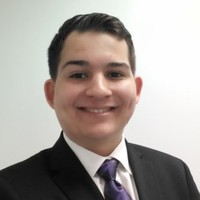

Autorino Technology Solutions is an information technology organization that focuses on providing in person and remote tech support
for the Baldwin and Oceanside community. We focus on providing support for residents but we also assist businesses. Some areas we specialize in include
device set-up and repair, network routing, software solutions, and PC support. Whatever assistance you may need, we will do our best to help you!
Please do not hesitate to contact us with a request and get a free quote for our services.
| Staff | Description |
|---|---|
|  | Michael Autorino - CEO mautorino101@gmail.com |
Email: mautorino101@gmail.com